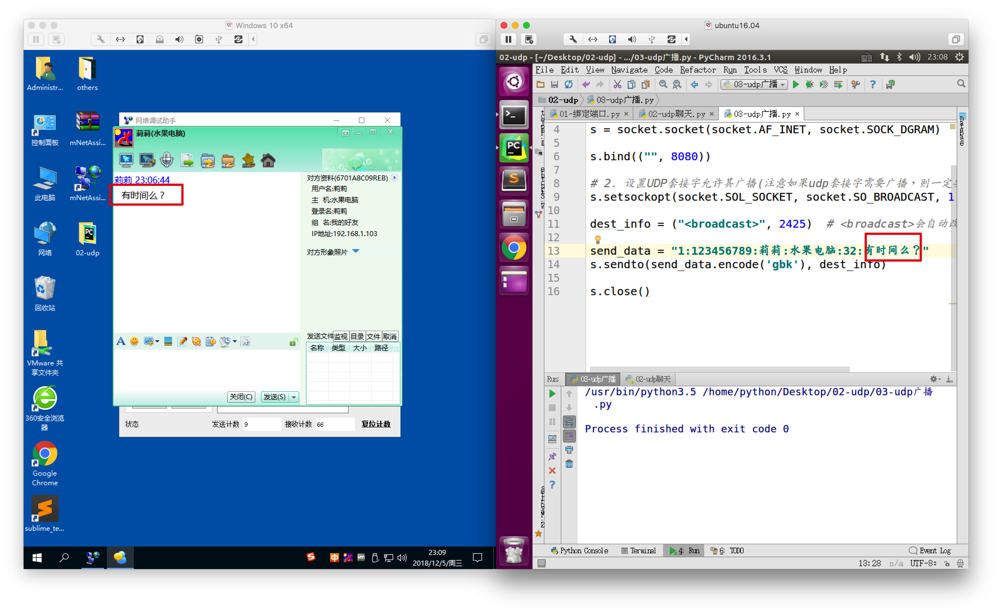

广播-小案例
1. 目的
用更有趣的效果，来体会广播的威力
2. 功能效果描述
发送一个udp广播数据，发送一个 飞秋 消息给所有人
3. 飞秋消息格式
# 飞秋消息格式如下
#版本:消息序号:用户名:电脑名:功能(32表示发送消息):发送的消息内容
"1:123456789:莉莉:水果电脑:32:有时间么？"
4. 参考代码
import socket
# 1. 创建UDP套接字
s = socket.socket(socket.AF_INET, socket.SOCK_DGRAM)
s.bind(("", 8080))
# 2. 设置UDP套接字允许其广播(注意如果udp套接字需要广播，则一定要添加此语句)
s.setsockopt(socket.SOL_SOCKET, socket.SO_BROADCAST, 1)
dest_info = ("<broadcast>", 2425) # <broadcast>会自动改为本局域网的广播ip
send_data = "1:123456789:莉莉:水果电脑:32:有时间么？"
# 3. 发送广播数据
s.sendto(send_data.encode('gbk'), dest_info)
# 4. 关闭套接字
s.close()
5. 运行效果

6. 小总结
发送方与接收方之间可以约定，是否有自己的特殊格式，其实
"1:123456789:莉莉:水果电脑:32:有时间么？"
就是飞秋自有的协议，如果我们在以后的工作中 需要接入到某个系统中，那么也就意味着需要根据他们使用的协议规范来完成我们自己的代码，这样才能使多方编写的代码能够互通